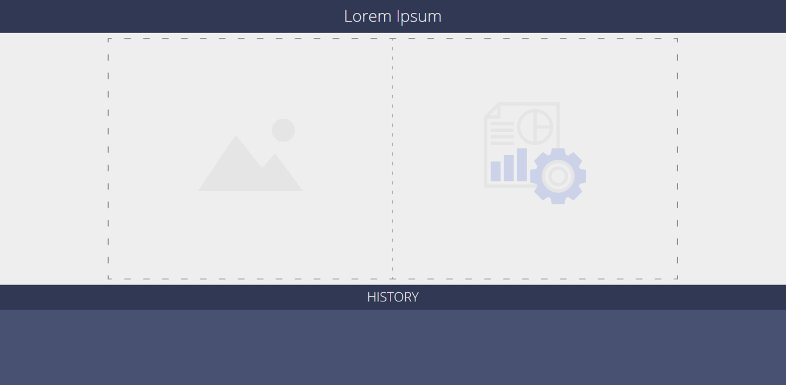

After studying Angular the previous year in the context of Programming Engineering, we have decided to use it again as it's easy to start off compared to learning another web library/framework and better than using pure html/js.
Angular has a lot of advantages and them can be listed: MVC structure, Dependency Injection, Less Coding, Two Way Data Binding, Single Page Application and others.
- MVC – If you are used to splitting your app into MVC components and then stitching them together with code your woes are over. With AngularJS you would split the components and the framework would take care of the rest. It serves as the pipeline that connects these components.
- Dependency Injection – The whole of AngularJS has a built-in dependency injection subsystem that eases the process of unit testing. With this you can ask for dependencies rather than go out hunting for them. To put this in simpler terms, when you aim to gain access to core AngularJS services you would be only required to add service as a parameter. AngularJS detects your need and offers you the services instantly.
- Less Coding – All the above advantages point towards another advantage of Angular js– less coding. Developers would jump hearing this and AngularJS reduces coding for each app substantially. Here the data models are simpler to write and require no getters/setters. You can easily manipulate the data using filters without modifying controllers.
- Two Way Dating Binding – It is a fascinating real-time concept that makes AngularJS very popular with developers. AngularJS provides projection of models to the application view and this allows the projection to be seamless and needs little effort from developers. There is no need of fresh cycles for the view and model which made them prone to bugs.
- Single Page Applications – These are becoming pretty popular these days thanks to their responsiveness. With AngularJS, you can easily make Single Page Applications and move a lot of functionality to the web a model which is termed as distributed computing node.
- Performance - Dynamic applications didn’t always perform that well. Complex SPAs could be laggy and inconvenient to use due to their size.
- Steep learning curve - If you onboard new developers familiar with JavaScript to learn and use new Angular, they will be challenged compared to similar React or Vue onboarding. The array of topics and aspects to be covered is large: modules, dependency injection that we mentioned before, components, services, templates, etc. Another barrier is RxJS, a reactive programming library for asynchronous programming. Learning it, at least on the basic level, is mandatory for using Angular. Engineers complain about error messages that are too cryptic to grasp without additional research followed by trial-and-error manipulations. TypeScript, as we’ve already mentioned in the benefits section, is also a bone of contention. While TypeScript improves maintainability of code, having to learn it doesn’t make the curve gentler.
- Angular is verbose and complex - The most frequent complaint that you hear from the Angular development community is the verbosity of the instrument. This problem hasn’t changed since AngularJS. Although we’ve mentioned the component-based architecture as the major Angular benefit, the way components are managed is too complicated. For instance, you may need up to five files for a single component in Angular, have to inject dependencies, and declare the component lifecycle interfaces. Other points of concern are Angular-specific 3rd party libraries and its syntax. Consequently, much of the development time in Angular is spent doing repetitive things.
- CLI documentation is lacking details - Some engineers express concerns with the current state of CLI documentation. While the command line is very useful and loved by Angular developers, you aren’t going to find enough info in their official documentation on GitHub and you’ll spend some time exploring threads on GitHub to get answers. Luckily, the community is there to help.
For making our work easier, we planned a meeting and start sketching a design using the blackboard. The user should be able to do any action with less than 3 clicks. This is the key for our SPA application. In the main window we can see two frames, in the left one we can see the added photo, in the right side we can see the procesed photo, under those two frames we can see the options for search the history of the images uploaded and procesed by the app. Underneath the options we have the preview of the history or shared images. On the right side we have a sidebar that gets open when pressing the left side buttons. The side bar contains the fields for login or the chat depending on the button pressed.
The user can upload an image by draggind and dropping the image.
The user can see the history of the images uploaded and procesed by clicking the history tab. The first button underneath the drag and drop window, is the history button. If this tab is selected, underneath the options bar, the images uploaded to the app are shown.
This section describes some phases during the development process of the application.
For the first sprint we planned a meeting at Faculty in order to design a prototype of the application. In this sketch we can see the dropdown areas for the images, the history bar underneath this area and some areas to which we gave up.
In the second sprint we managed to design some prototypes using html,css and also we sketched in paint better structure for the layout and we started to spliting the tasks for the front end team .
During the development process we saw that a lot of tasks remained undone so we planned to create a trello board and create tasks in order to every student who is eager to implement new things or doing some tasks, to have the chance without anyone working in the same time at the same tasks.
Once the trello board has been created and the tasks were added, we improved our design and we integrated angular into our project.
 \Started with the fourth sprint, refactoring tasks and functionalities tasks have been added to the trello board. The responsive of the application was added to the following sprint and during this phase tasks regarding responsiveness, refactoring code and dropdown functionalities were done.
First we started by creating an visual prototype for our application. For this we had to debate what we need to keep from the web-application and how to display web functionalities on a smaller screen and to be at the same time closer to the mobile environment.
We chose to make a multi page application with the following pages: Upload ,
Result and History.
For the Upload page we chose to make use of phone versatility and to use it's camera
application to upload images with manuscripts or any other type of texts. Also on this
page, the user has the ability to improve the results by setting some parameters like:
treshold, noise, use Gauss for normal users, and for advanced ones the advanced setting:
maximum column separators, maximum number of separtors, minimum scale and the maximum
number of lines, to improve the speed of our solution. Also, the user can upload the photo
without setting any parameters, and the result will be calculated with the default ones.
After the user upload it's manuscript and visualise it on a preview space on the upload page,
and after he end setting the parameters (if he chose to), he can press the submit button from
down of the page and an loading pop-up will appear and will disappear after we got his results.
When the loading pop-up disappear the Result button from the top-right corner of
the page will be activated and the user can navigate to the Result page.
In the Result page the user can visualise the results after processing the image
provided by him in the Upload page. In the image, user can see how our algorithms
recognised where the titles, columns, adnotation and other special paragraphs are placed in the
image, by being framed by rectangles of various colors that denote the type of paragraph.
Also here we display the used parameters for the displayed result, so that the user to understand
by comparison with later results that the parameters can provide him better results.
On the top of the page the user can set a title for the result and after the title was typed, the
Save button form the top right corner of the page will be activated and will let user to save the
result and will send him to the History page.
On this page we have a list of results, saved from the Result page
with the photo of the manuscript in the left of the row and in the right side the
title chosen by the user at save time.
At any time the user can tap over any of the saved results and review the result
in the Result page. These saved results are saved localy on the device
without using our service, so if the application is uninstalled all the saves will
be lost. Also the user has the ability to delete any of the saved results by tapping
on the Delete button from the top-right corner of the page and select
which result have to be deleted and then to tap on Done when he end his
job.
To implement the iOS Mobile Application we used the MacOS platform, because it's the
most stable way to implement iOS applications. We made use of the Xcode IDE especially
made for Apple Environment Development. We chose to implement the application in the
Swift because it's the latest programming language to be used for iOS
development and because it's much more closer to the Python language learned
this year at FII.
We started by learning the basics of the Swift programming language from
swift.org and after we established
our basis, we started with an application tutorial provided by Apple ( Start Developing iOS Apps)
which was an Food Traker app that took as through all Apple concepts about creating an iOS app:
building an UI and connecting it to our code (UI Prototype), working with view controllers
(Upload and Result pages), creating our data models (for class representation the results),
creating table views (History page), implementing navigations between pages and making
persistent data (saving data on the device).
The implementation of Android Mobile App was made in WindowsOS. As an editor it was used Android Studio IDE and written in Android Language(JAVA) and use AndroidSDK environment. The project use standard android library used for implementing UI interface and in activities for retrieve the photo from the galery , save it and send it to the back-end for processing and get it the procesed file back, for that we use library like okhttp3 and retrofit2 with helped us with Rest services.
The app is separeted by two activities: The Main Activity which get the photo selected from the user
and show it on the screen by pressing the Upload Image button, the SEND PHOTO button
will send to the second activity Text Activity) the chosen photo.
Text Activity will show the seleced image from the first screen and option for controling parameters like
Thresold or Noice, for each one of them we used an FloatSeekBar for adjust the value.
The upper two corners contain two buttons History for showing the last proccessed images and Result
for result of the proces.
The SUBMIT will give the back-end server the photo and get the proccessed one.